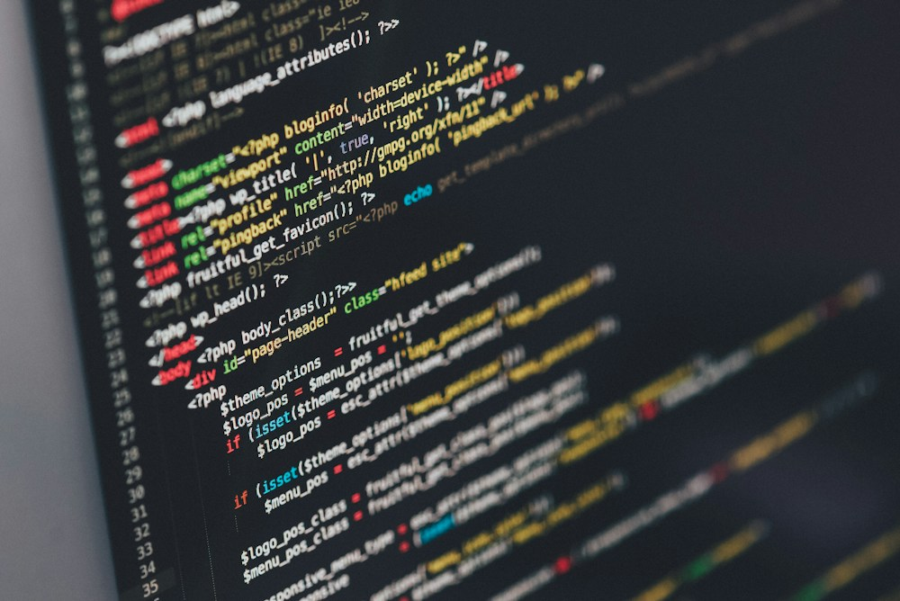

Laboratório apresenta um computador reparável
Autor: Hugo Nunes · · Categoria: Tecnologia

A possibilidade de substituir componentes prolonga a utilização de equipamentos.
Pequeno jornal tecnológico · Notícias fictícias para o exercício de HTML5
Autor: Hugo Nunes · · Categoria: Tecnologia
A possibilidade de substituir componentes prolonga a utilização de equipamentos.
Autor: Hugo Nunes · · Categoria: Programação

Estudantes praticam títulos, listas e elementos semânticos.
Autor: Hugo Nunes · · Categoria: IA

O protótipo organiza perguntas para apoiar a revisão de conteúdos.
Autor: Hugo Nunes · · Categoria: Segurança
A atividade usa exemplos fictícios para discutir proteção de contas.
Autor: Hugo Nunes · · Categoria: Acessibilidade

O jornal verifica se os conteúdos podem ser percorridos sem rato.